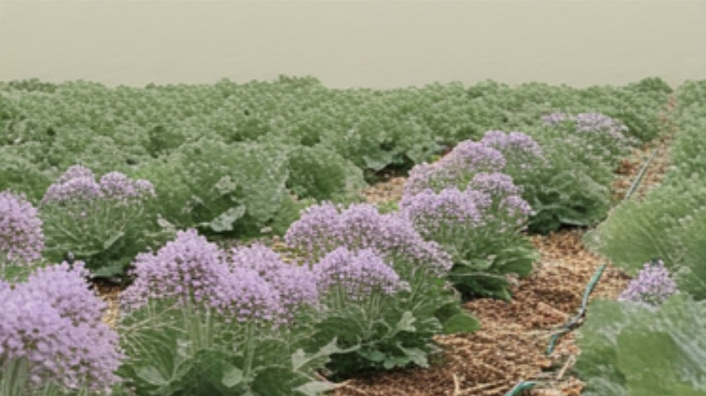

Gründüngung im Gemüsebeet: was säen, wann, und wie einarbeiten
Ein abgeerntetes Beet, das bis zum Frühjahr nackt daliegt, verliert über den Winter Nährstoffe, Struktur und Leben.
Gründüngung sind Pflanzen, die du säst, ohne sie zu ernten. Sie halten den Boden bedeckt, binden Nährstoffe, die sonst mit dem Regen in tiefere Schichten wandern, lockern mit ihren Wurzeln und liefern im Frühjahr organisches Material. Der Aufwand besteht aus einmal Säen. Den Rest macht die Pflanze.
Warum ein leeres Beet ein Verlust ist
Nach der Ernte ist der Boden voller freier Nährstoffe – vor allem Stickstoff, den die abgeräumte Kultur nicht mehr aufnimmt. Regen wäscht ihn aus, im Winter besonders gründlich. Gleichzeitig schlämmt nackte Erde bei Starkregen zu, die oberste Schicht verkrustet, und was an Bodenleben da war, verliert seine Nahrungsgrundlage. Eine Gründüngung fängt beides ab: Die Wurzeln nehmen den Stickstoff auf und geben ihn frei, wenn die Pflanze verrottet – also genau dann, wenn im Frühjahr wieder etwas wächst.
Welche Gründüngung zu welchem Beet passt
Die wichtigste Frage ist nicht, welche am schönsten aussieht, sondern zu welcher Pflanzenfamilie sie gehört. Gründüngung ist Teil deiner Fruchtfolge, auch wenn du sie nicht erntest.
| Pflanze | Familie | Aussaat bis | Besonderheit |
|---|---|---|---|
| Phacelia (Büschelschön) | Raublattgewächs | Mitte September | Mit keinem Gemüse verwandt – passt in jede Fruchtfolge. Friert ab. |
| Gelbsenf | Kreuzblütler | Ende September | Sehr schnell, aber nicht vor oder nach Kohl, Radieschen, Rettich. |
| Ölrettich | Kreuzblütler | Mitte September | Tiefe Pfahlwurzeln, lockert verdichteten Boden. Gleiche Einschränkung. |
| Winterroggen | Süßgras | Ende Oktober | Winterhart, wächst weiter – muss im Frühjahr aktiv beendet werden. |
| Inkarnatklee, Ackerbohne | Schmetterlingsblütler | Anfang September | Sammeln Stickstoff aus der Luft. Nicht vor Erbsen und Bohnen. |
| Buchweizen | Knöterichgewächs | Ende August | Sehr schnell, frostempfindlich, gut für Lücken im Spätsommer. |
Für den Hausgarten ist Phacelia die sicherste Wahl. Sie ist mit keinem verbreiteten Gemüse verwandt, blüht für die Bienen, friert zuverlässig ab und hinterlässt eine feine Mulchdecke. Gelbsenf ist billiger und schneller, gehört aber zu den Kreuzblütlern – auf einem Beet, auf dem Kohl stand oder im nächsten Jahr stehen soll, erhöht er das Risiko für Kohlhernie.
Säen: die zehn Minuten, um die es geht
Beet abräumen, gröbere Reste entfernen, die Oberfläche mit dem Rechen leicht lockern. Saatgut breitwürfig ausstreuen – die Menge steht auf der Packung, grob zwei bis drei Gramm pro Quadratmeter bei Phacelia. Danach flach einharken, sodass die Körner Bodenschluss haben, und angießen, wenn es trocken ist. Mehr ist es nicht.
Der häufigste Fehler ist zu spätes Säen. Eine Gründüngung braucht vier bis sechs Wochen Wachstum, bevor die Tage zu kurz werden – was Anfang Oktober keimt, kommt über zwei Zentimeter nicht hinaus und bringt nichts. Als Faustregel gilt: Was du bis Mitte September nicht in der Erde hast, ersetzt du besser durch eine Mulchschicht aus Laub oder Stroh.
Einarbeiten im Frühjahr – flach, nicht tief
Die abgefrorenen Pflanzen bleiben über den Winter liegen. Sie schützen die Erde vor Verschlämmung und werden bis zum Frühjahr von Regenwürmern eingezogen. Im März harkst du die Reste flach ein, höchstens fünf Zentimeter tief. Tiefes Umgraben ist genau das Falsche: Es bringt das Material in Schichten, in denen kaum Sauerstoff ist, und dort fault es, statt zu verrotten.
Zwischen Einarbeiten und Aussaat der nächsten Kultur sollten zwei bis drei Wochen liegen. In dieser Zeit binden die Bodenmikroben kurzzeitig Stickstoff, um das frische Grün zu zersetzen – säst du sofort, fehlt er den Keimlingen. Winterroggen ist der Sonderfall: Er lebt im Frühjahr weiter und muss abgeschnitten oder abgehackt werden, sonst wird aus der Gründüngung ein Unkrautproblem.
Wann sich Gründüngung nicht lohnt
Auf einem Beet, das im Herbst noch trägt, hat sie keinen Platz – Feldsalat und Grünkohl sind die bessere Bodendecke, weil du sie auch essen kannst. Bei sehr kleinen Flächen und im Hochbeet reicht meist eine Laub- oder Strohschicht. Und wer im Frühjahr sehr früh sät, sollte Gründüngung meiden, die erst spät abfriert: Der Boden muss abgetrocknet und bearbeitbar sein, wenn die ersten Radieschen hineinsollen.
Gründüngung ist die Arbeit, die man im August macht und im Mai bemerkt. Der Boden ist krümeliger, dunkler und lässt sich leichter bearbeiten – und nichts davon musste gekauft werden.
Hortini merkt sich, welche Pflanzenfamilie auf welchem Beet stand, und warnt dich, wenn eine Gründüngung nicht in die Fruchtfolge passt.
Kostenlos ausprobieren